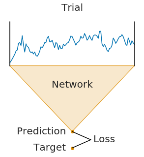
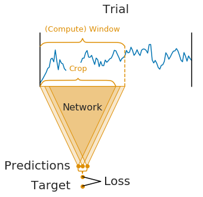
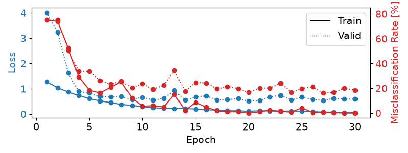
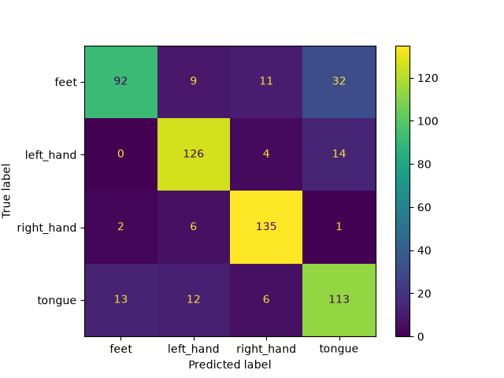

Note
Go to the end to download the full example code.
Cropped Decoding on BCIC IV 2a Dataset#
Building on the Trialwise Decoding, we now do more data-efficient cropped decoding!
In Braindecode, there are two supported configurations created for training models: trialwise decoding and cropped decoding. We will explain this visually by comparing trialwise to cropped decoding.


On the left, you see trialwise decoding:
A complete trial is pushed through the network.
The network produces a prediction.
The prediction is compared to the target (label) for that trial to compute the loss.
On the right, you see cropped decoding:
Instead of a complete trial, crops are pushed through the network.
For computational efficiency, multiple neighbouring crops are pushed through the network simultaneously (these neighbouring crops are called compute windows)
Therefore, the network produces multiple predictions (one per crop in the window)
The individual crop predictions are AVERAGED before computing the loss function
This averaging of predictions of small sub-windows is the key difference between trialwise and cropped decoding. It was introduced in [1] and it impact on the parameters of the network.
It is important to note that the averaging of predictions is only done during training. During testing, the network is still applied to crops and the predictions are averaged afterwards.
Note
The network architecture implicitly defines the crop size (it is the receptive field size, i.e., the number of timesteps the network uses to make a single prediction)
The window size is a user-defined hyperparameter, called
n_timesin Braindecode. It mostly affects runtime (larger window sizes should be faster). As a rule of thumb, you can set it to two times the crop size.Crop size and window size together define how many predictions the network makes per window:
#window - #crop + 1 = #predictions
Note
For cropped decoding, the above training setup is mathematically similar to sampling crops in your dataset, pushing them through the network and training directly on the individual crops. However, the if their position would be randomly selected, the crops would be less correlated in contrast to the neighbourhood crops selected from a window. At the same time, the above training setup is much faster as it avoids redundant computations by using dilated convolutions, see [2]. However, the two setups are only mathematically related in case (1) your network does not use any padding or only left padding and (2) your loss function leads to the same gradients when using the averaged output. The first is true for our shallow and deep ConvNet models and the second is true for the log-softmax outputs and negative log likelihood loss that is typically used for classification in PyTorch.
Loading and preprocessing the dataset#
Loading and preprocessing stays the same as in the Trialwise decoding tutorial.
from braindecode.datasets import MOABBDataset
subject_id = 3
dataset = MOABBDataset(dataset_name="BNCI2014_001", subject_ids=[subject_id])
from numpy import multiply
from braindecode.preprocessing import (
Preprocessor,
exponential_moving_standardize,
preprocess,
)
low_cut_hz = 4.0 # low cut frequency for filtering
high_cut_hz = 38.0 # high cut frequency for filtering
# Parameters for exponential moving standardization
factor_new = 1e-3
init_block_size = 1000
# Factor to convert from V to uV
factor = 1e6
preprocessors = [
Preprocessor("pick_types", eeg=True, meg=False, stim=False),
# Keep EEG sensors
Preprocessor(lambda data: multiply(data, factor)), # Convert from V to uV
Preprocessor("filter", l_freq=low_cut_hz, h_freq=high_cut_hz),
# Bandpass filter
Preprocessor(
exponential_moving_standardize,
# Exponential moving standardization
factor_new=factor_new,
init_block_size=init_block_size,
),
]
# Transform the data
preprocess(dataset, preprocessors, n_jobs=-1)
/home/runner/work/braindecode/braindecode/braindecode/preprocessing/preprocess.py:77: UserWarning: apply_on_array can only be True if fn is a callable function. Automatically correcting to apply_on_array=False.
warn(
/home/runner/work/braindecode/braindecode/braindecode/preprocessing/preprocess.py:75: UserWarning: Preprocessing choices with lambda functions cannot be saved.
warn("Preprocessing choices with lambda functions cannot be saved.")
Create model and compute windowing parameters#
In contrast to trialwise decoding, we first have to create the model before we can cut the dataset into windows. This is because we need to know the neural network parameters to know how large the sub-window stride should be.
We first choose the compute/input window size that will be fed to the network during training. This has to be larger than the networks the number of timesteps size and can otherwise be chosen for computational efficiency (see explanations in the beginning of this tutorial). Here we choose 1000 samples, which are 4 seconds for the 250 Hz sampling rate.
n_times = 1000
Now we create the model. To enable it to be used in cropped decoding
efficiently, we manually set the length of the final convolution layer
to some length that makes the number of timesteps of the ConvNet smaller
than n_times (see final_conv_length=30 in the model
definition).
import torch
from braindecode.models import ShallowFBCSPNet
from braindecode.util import set_random_seeds
cuda = torch.cuda.is_available() # check if GPU is available, if True chooses to use it
device = "cuda" if cuda else "cpu"
if cuda:
torch.backends.cudnn.benchmark = True
# Set random seed to be able to roughly reproduce results
# Note that with cudnn benchmark set to True, GPU indeterminism
# may still make results substantially different between runs.
# To obtain more consistent results at the cost of increased computation time,
# you can set `cudnn_benchmark=False` in `set_random_seeds`
# or remove `torch.backends.cudnn.benchmark = True`
seed = 20200220
set_random_seeds(seed=seed, cuda=cuda)
n_classes = 4
classes = list(range(n_classes))
# Extract number of chans from dataset
n_chans = dataset[0][0].shape[0]
model = ShallowFBCSPNet(
n_chans,
n_classes,
n_times=n_times,
final_conv_length=30,
)
# Display torchinfo table describing the model
print(model)
# Send model to GPU
if cuda:
_ = model.cuda()
=================================================================================================================================================
Layer (type (var_name):depth-idx) Input Shape Output Shape Param # Kernel Shape
=================================================================================================================================================
ShallowFBCSPNet (ShallowFBCSPNet) [1, 22, 1000] [1, 4, 32] -- --
├─Ensure4d (ensuredims): 1-1 [1, 22, 1000] [1, 22, 1000, 1] -- --
├─Rearrange (dimshuffle): 1-2 [1, 22, 1000, 1] [1, 1, 1000, 22] -- --
├─CombinedConv (conv_time_spat): 1-3 [1, 1, 1000, 22] [1, 40, 976, 1] 36,240 --
├─BatchNorm2d (bnorm): 1-4 [1, 40, 976, 1] [1, 40, 976, 1] 80 --
├─Square (conv_nonlin_exp): 1-5 [1, 40, 976, 1] [1, 40, 976, 1] -- --
├─AvgPool2d (pool): 1-6 [1, 40, 976, 1] [1, 40, 61, 1] -- [75, 1]
├─SafeLog (pool_nonlin_exp): 1-7 [1, 40, 61, 1] [1, 40, 61, 1] -- --
├─Dropout (drop): 1-8 [1, 40, 61, 1] [1, 40, 61, 1] -- --
├─Sequential (final_layer): 1-9 [1, 40, 61, 1] [1, 4, 32] -- --
│ └─Conv2d (conv_classifier): 2-1 [1, 40, 61, 1] [1, 4, 32, 1] 4,804 [30, 1]
│ └─SqueezeFinalOutput (squeeze): 2-2 [1, 4, 32, 1] [1, 4, 32] -- --
│ │ └─Rearrange (squeeze): 3-1 [1, 4, 32, 1] [1, 4, 32] -- --
=================================================================================================================================================
Total params: 41,124
Trainable params: 41,124
Non-trainable params: 0
Total mult-adds (Units.MEGABYTES): 0.15
=================================================================================================================================================
Input size (MB): 0.09
Forward/backward pass size (MB): 0.31
Params size (MB): 0.02
Estimated Total Size (MB): 0.42
=================================================================================================================================================
And now we transform model with strides to a model that outputs dense prediction, so we can use it to obtain predictions for all crops.
To know the models’ output shape without the last layer, we calculate the shape of model output for a dummy input.
Cut the data into windows#
In contrast to trialwise decoding, we have to supply an explicit
window size and window stride to the
braindecode.preprocessing.create_windows_from_events() function.
from braindecode.preprocessing import create_windows_from_events
trial_start_offset_seconds = -0.5
# Extract sampling frequency, check that they are same in all datasets
sfreq = dataset.datasets[0].raw.info["sfreq"]
assert all([ds.raw.info["sfreq"] == sfreq for ds in dataset.datasets])
# Calculate the trial start offset in samples.
trial_start_offset_samples = int(trial_start_offset_seconds * sfreq)
# Create windows using braindecode function for this. It needs parameters to define how
# trials should be used.
windows_dataset = create_windows_from_events(
dataset,
trial_start_offset_samples=trial_start_offset_samples,
trial_stop_offset_samples=0,
window_size_samples=n_times,
window_stride_samples=n_preds_per_input,
drop_last_window=False,
preload=True,
)
Split the dataset#
This code is the same as in trialwise decoding.
Training#
In difference to trialwise decoding, we now should supply
cropped=True to the EEGClassifer, and CroppedLoss as the criterion,
as well as criterion__loss_function as the loss function
applied to the meaned predictions.
Note
In this tutorial, we use some default parameters that we have found to work well for motor decoding, however we strongly encourage you to perform your own hyperparameter optimization using cross validation on your training data.
from skorch.callbacks import EarlyStopping, LRScheduler
from skorch.helper import predefined_split
from braindecode import EEGClassifier
from braindecode.training import CroppedLoss
# These values we found good for shallow network:
lr = 0.0625 * 0.01
weight_decay = 0
# For deep4 they should be:
# lr = 1 * 0.01
# weight_decay = 0.5 * 0.001
batch_size = 64
n_epochs = 4
clf = EEGClassifier(
model,
cropped=True,
criterion=CroppedLoss,
criterion__loss_function=torch.nn.functional.cross_entropy,
optimizer=torch.optim.AdamW,
train_split=predefined_split(valid_set),
optimizer__lr=lr,
optimizer__weight_decay=weight_decay,
iterator_train__shuffle=True,
batch_size=batch_size,
callbacks=[
"accuracy",
("lr_scheduler", LRScheduler("CosineAnnealingLR", T_max=max(1, n_epochs - 1))),
("early_stopping", EarlyStopping(patience=10, load_best=True)),
],
device=device,
classes=classes,
)
# Model training for a specified number of epochs. ``y`` is None as it is
# already supplied in the dataset.
clf.fit(train_set, y=None, epochs=n_epochs)
epoch train_accuracy train_loss valid_accuracy valid_loss lr dur
------- ---------------- ------------ ---------------- ------------ ------ ------
1 0.2500 1.2760 0.2500 4.4867 0.0006 8.6267
2 0.2917 1.0310 0.2708 2.9803 0.0005 8.5130
3 0.4132 0.9101 0.3889 1.8260 0.0002 8.5686
4 0.5000 0.8797 0.4896 1.2176 0.0000 8.5326
Training for longer#
The gallery build above uses only n_epochs = 4. When trained
offline for up to 100 epochs with early stopping, the model reaches
83.7 % accuracy on the held-out session (chance = 25 %).
We can load the pretrained checkpoint from the Hugging Face Hub and inspect the full training curves:
import warnings
repo_id = "braindecode/plot_bcic_iv_2a_moabb_cropped"
try:
from huggingface_hub import hf_hub_download
clf.initialize()
clf.load_params(
f_params=hf_hub_download(repo_id, "params.safetensors"),
f_history=hf_hub_download(repo_id, "history.json"),
use_safetensors=True,
)
except Exception as exc:
warnings.warn(
f"Could not load pretrained checkpoint from {repo_id} ({exc}); "
"continuing with the locally trained short-run model.",
stacklevel=2,
)
Re-initializing module.
Re-initializing criterion because the following parameters were re-set: loss_function.
Re-initializing optimizer.
Plot training curves#
Note
Note that we drop further in the classification error and loss as in the trialwise decoding tutorial.
import matplotlib.pyplot as plt
import pandas as pd
from matplotlib.lines import Line2D
# Extract loss and accuracy values for plotting from history object
results_columns = ["train_loss", "valid_loss", "train_accuracy", "valid_accuracy"]
df = pd.DataFrame(
clf.history[:, results_columns],
columns=results_columns,
index=clf.history[:, "epoch"],
)
# get percent of misclass for better visual comparison to loss
df = df.assign(
train_misclass=100 - 100 * df.train_accuracy,
valid_misclass=100 - 100 * df.valid_accuracy,
)
fig, ax1 = plt.subplots(figsize=(8, 3))
df.loc[:, ["train_loss", "valid_loss"]].plot(
ax=ax1, style=["-", ":"], marker="o", color="tab:blue", legend=False, fontsize=14
)
ax1.tick_params(axis="y", labelcolor="tab:blue", labelsize=14)
ax1.set_ylabel("Loss", color="tab:blue", fontsize=14)
ax2 = ax1.twinx() # instantiate a second axes that shares the same x-axis
df.loc[:, ["train_misclass", "valid_misclass"]].plot(
ax=ax2, style=["-", ":"], marker="o", color="tab:red", legend=False
)
ax2.tick_params(axis="y", labelcolor="tab:red", labelsize=14)
ax2.set_ylabel("Misclassification Rate [%]", color="tab:red", fontsize=14)
ax2.set_ylim(ax2.get_ylim()[0], 85) # make some room for legend
ax1.set_xlabel("Epoch", fontsize=14)
# where some data has already been plotted to ax
handles = []
handles.append(
Line2D([0], [0], color="black", linewidth=1, linestyle="-", label="Train")
)
handles.append(
Line2D([0], [0], color="black", linewidth=1, linestyle=":", label="Valid")
)
plt.legend(handles, [h.get_label() for h in handles], fontsize=14)
plt.tight_layout()

Plot Confusion Matrix#
Generate a confusion matrix as in [2]
from sklearn.metrics import ConfusionMatrixDisplay
y_true = valid_set.get_metadata().target
y_pred = clf.predict(valid_set)
label_dict = valid_set.datasets[0].window_kwargs[0][1]["mapping"]
sorted_items = sorted(label_dict.items(), key=lambda kv: kv[1])
labels = [k for k, _ in sorted_items]
class_ids = [v for _, v in sorted_items]
ConfusionMatrixDisplay.from_predictions(
y_true, y_pred, labels=class_ids, display_labels=labels
)

<sklearn.metrics._plot.confusion_matrix.ConfusionMatrixDisplay object at 0x7f7e4d311100>
References#
Total running time of the script: (0 minutes 51.580 seconds)
Estimated memory usage: 1483 MB
Run this example